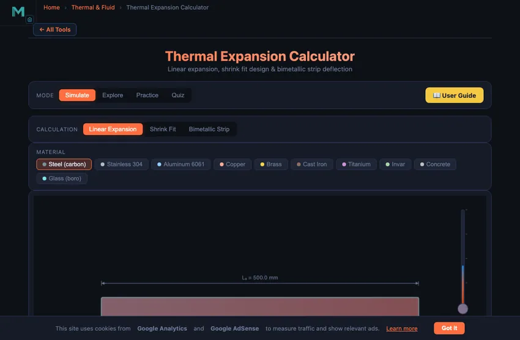

Thermal Expansion Calculator
Linear expansion, shrink fit design & bimetallic strip deflection
Σ Live equations — values substituted from current state
💡 What-if coach — insights from current values
Click "New Problem" to begin.
Click "Start Quiz" to begin a 5-question round.
1 Overview
The Thermal Expansion Calculator is an interactive tool for computing how materials change dimensions with temperature. It covers four calculation types: linear expansion (ΔL = αΔT × L₀), shrink fit design (calculating interference fits and required heating temperatures), bimetallic strip deflection (predicting curvature when two bonded metals expand differently), and thermal stress in a constrained bar (σ = EαΔT). The simulator supports 10 engineering materials, each with accurate coefficients of thermal expansion (α), plus your own custom materials, and displays results in SI or Imperial units.
This tool serves mechanical engineering students, manufacturing technicians working with interference fits, design engineers specifying thermal clearances, and instructors teaching thermal stress and volumetric expansion concepts. The four modes — Simulate, Explore, Practice, and Quiz — cover everything from interactive visualisation to self-assessment.
2 Entering the Inputs
The simulator opens in Simulate mode with Linear Expansion selected. You see a material selector bar with 10 metals (plus a + Custom button for your own), a preset bar with ready-made scenarios, a canvas showing a bar that visually grows or shrinks with temperature, and input controls for initial length, initial temperature, and temperature change (ΔT). The ΔT slider has a companion number box for typing an exact value. Readout cells display ΔL, final length, strain ε, and ΔT.
To begin, select a material (e.g., Carbon Steel with α = 12.0 × 10−6/°C), set an initial length (say 500 mm), and drag the ΔT slider. As you increase ΔT, the bar visually elongates and the readouts update in real time. Switch to Shrink Fit to enter shaft diameter, hub bore, and hub OD — here the slider becomes the hub heating control, so you can watch the bore expand past the shaft. Switch to Bimetallic Strip to select two different materials and observe how the strip bends, or to Thermal Stress to clamp a bar between rigid walls and see σ = EαΔT develop.
3 Reading the Result
In Linear Expansion, the canvas shows the original bar length alongside the expanded (or contracted) bar, with the dimensional change exaggerated for visibility. The formula ΔL = α × L₀ × ΔT is applied using the selected material's coefficient. Try comparing Invar (α = 1.2 × 10−6/°C) with Aluminium 6061 (α = 23.6 × 10−6/°C) to see a 20-fold difference in expansion. The Live equations panel below the readouts substitutes your current values into the formula in real time, and the Show Calculations button on the canvas opens a step-by-step derivation of every number on screen.
In Shrink Fit mode, enter the shaft diameter and hub bore to define the interference. The calculator determines the required ΔT to expand the hub bore enough to slide over the shaft, using ΔT = δ/(α × d). The canvas visualises the shaft, hub, and the gap or interference. In Bimetallic Strip mode, select two metals with different α values, set layer thicknesses, and observe the strip curvature as ΔT increases. The deflection is proportional to the α difference and the temperature change.
4 The Formulas Behind It
Switch to Explore mode to browse concept cards across four categories: Fundamentals, Materials, Applications, and Design. Fundamentals covers the physics of thermal expansion at the atomic level, the difference between linear and volumetric expansion (β ≈ 3α), and the concept of thermal strain and thermal stress when expansion is constrained.
The Materials category provides a reference table of α values for 10 engineering materials, from Invar (lowest) to Aluminium (highest). Applications covers railroad expansion joints, bridge bearings, shrink fit assemblies in turbines and gear blanks, bimetallic thermostats, and thermal compensation in precision instruments. The Design category explains tolerance stack-up under temperature variation, clearance calculations for sliding fits, and how to select materials to minimise thermal distortion.
5 Try a Problem
Practice mode generates randomised problems. You might be asked to calculate the expansion of a copper pipe when heated by 80 °C, find the required temperature for a shrink fit assembly, or determine the deflection of an aluminium-steel bimetallic strip. Click New Problem to start, enter your answer, and click Check for instant feedback. Click Show Solution if you need the step-by-step working. Your score is tracked continuously.
Quiz mode presents five questions per session with both multiple-choice and numerical formats. Topics include identifying which material expands the most, calculating thermal stress in a constrained bar, determining shrink fit temperatures, and predicting bimetallic strip behaviour. After completing the quiz, review your results to identify areas for further study. This is especially useful for manufacturing technology and strength of materials examinations.
6 Engineering Notes
- The coefficient of thermal expansion α is temperature-dependent in reality, but for most engineering calculations over moderate temperature ranges, a constant value is sufficiently accurate.
- For shrink fits, always add a safety margin of 20–50 °C above the minimum calculated ΔT to ensure easy assembly. The simulator shows the minimum; real practice requires overshoot.
- In bimetallic strip calculations, maximum deflection occurs when the two materials have the largest difference in α values. Try pairing Invar (α = 1.2) with Brass (α = 19.0) for maximum curvature.
- Remember that volumetric expansion is approximately three times the linear expansion: β ≈ 3α. This matters for liquid containers and reservoirs.
- When expansion is constrained (e.g., a bar fixed between walls), thermal stress σ = EαΔT develops. This can cause buckling in railroad tracks or cracking in rigid structures.
- Combine this tool with the Stress-Strain Diagram Simulator and Tolerance & Fits Calculator to understand how thermal expansion interacts with mechanical properties and manufacturing tolerances.
7 Units, Presets, Exports & Custom Materials
- SI / Imperial toggle: switch the whole tool between mm/°C/MPa and in/°F/ksi. All calculations stay in SI internally; inputs and readouts convert instantly, and α is re-expressed per °F. Temperature differences convert as ×1.8 (no +32 offset).
- Presets: one-click classroom scenarios per tab — rail sections, bridge girders, gear-hub shrink fits, brass/Invar thermostat strips, clamped steam pipes. Each preset sets the material and every input together.
- Export CSV: downloads a ΔT sweep table (−200 to +500 °C) of the current calculation — ready for spreadsheets or lab reports. Export PNG saves the canvas as a watermarked image.
- Right-click the canvas for a quick menu: Export PNG, Export CSV, Copy Result, and Reset Inputs.
- + Custom material: add any material by name, α, Young's modulus E, and Poisson's ratio ν. The dialog is unit-aware — in Imperial mode it accepts α per °F and E in ×10⁶ psi.
- Keyboard: Esc closes any open dialog or menu.
Understanding Thermal Expansion in Engineering

Thermal expansion is the change in a material's dimensions with temperature, calculated as ΔL = α × L0 × ΔT, where α is the coefficient of linear thermal expansion. A 1 m carbon steel bar (α = 12.0 × 10-6/°C) heated by 100 °C grows 1.2 mm; if that growth is blocked, the bar instead develops stress σ = EαΔT.
At the atomic level, heating makes atoms vibrate more vigorously, increasing the average interatomic spacing. Uncontrolled expansion — or the stress created when expansion is constrained — causes buckled railway tracks, cracked concrete slabs, and seized precision assemblies, which is why every mechanical designer works with α values from the first sketch onward.
How Does a Shrink Fit Assembly Work?
Shrink fitting is a precision assembly technique that exploits thermal expansion to join two cylindrical parts. A hub or ring is heated until its bore expands enough to slide over the shaft, then cooled to create a tight interference fit. The required temperature change depends on the interference (difference between shaft diameter and hub bore) and the material’s expansion coefficient: ΔT = δ / (α × d). The resulting contact pressure between shaft and hub can be calculated using Lamé’s thick-cylinder equations, enabling engineers to determine the torque and axial load capacity of the joint. This method is widely used for gear blanks, bearing races, and turbine discs.
How Does a Bimetallic Strip Work?
A bimetallic strip consists of two metals with different expansion coefficients bonded together. When temperature changes, the strip bends because one layer expands more than the other. The curvature depends on the difference in α values, the temperature change, and the thickness ratio of the two layers. Bimetallic strips are the working principle behind mechanical thermostats, circuit breakers, and temperature compensation devices. Materials like Invar (α = 1.2 × 10-6/°C) paired with brass (α = 19.0 × 10-6/°C) produce maximum deflection for a given temperature change.
Why Railway Lines Have Gaps — The 1 mm per metre per 100 °C Rule
Continuous welded rail is the modern standard, but the older bolted-joint railway in many countries deliberately leaves 6−10 mm gaps between rail sections. Steel expands at roughly 12×10−6 per °C; a 25 m rail section over a 50 °C seasonal temperature swing changes length by 25×0.000012×50 = 15 mm. Without expansion gaps, the rail would buckle laterally in summer or pull apart in winter.
Modern continuous welded rail solves this differently: the rail is laid at a specific “stress-free” temperature (typically 25−30 °C), then pre-tensioned and anchored so the longitudinal stress stays within material limits across the full temperature range. The technique allows smooth, quiet operation but requires careful sleeper anchoring and regular inspection — misaligned anchors lead to “sun kink” lateral buckling, a well-known failure mode.
What Happens When Thermal Expansion Is Constrained?
A free bar of 1 metre steel heated by 50 °C grows by 0.6 mm. Stress is zero (it just expanded). Now constrain that bar at both ends and heat by the same 50 °C. It cannot grow, so the “denied” strain becomes a compressive stress instead:
σ = E × α × ΔT = 200,000 × 12×10−6 × 50 = 120 MPa
That is 120 MPa of compressive stress — about half the yield strength of mild steel — for a single 50 °C temperature rise. Many a tightly-installed pipe has buckled overnight when its run was clamped end-to-end with no expansion bellows. Expansion joints in plumbing, building expansion gaps every 30−40 m of concrete slab, and engine cooling-water tubes all exist because of this calculation.
Bridges, Building Slabs, and the Bimetallic Strip
- Bridge expansion joints. A 100 m steel bridge changes length by 60 mm over a 50 °C range. The expansion joints at the ends (finger joints, modular joints) are sized to absorb this without binding.
- Concrete pavement. Concrete α = 10×10−6/°C. Pavements are deliberately laid with expansion joints every 30−40 m and contraction joints every 5−10 m. Without them, every long stretch develops random transverse cracks within months.
- Bimetallic thermostats. Pair brass (α = 19×10−6) with Invar (α = 1.2×10−6). The strip bends sharply with temperature, opening or closing electrical contacts. Old domestic thermostats, automotive thermostats, kitchen-oven controllers — all the same physics.
- Shrink-fit assembly. Heat a gear blank to expand its bore by 0.05 mm, slip it on the shaft, let it cool. Result: interference fit with hundreds of N·m torque capacity. The technique requires careful ΔT calculation; too much heat anneals heat-treated steel.
Thermal Expansion Formulas
| Type | Formula | Description |
|---|---|---|
| Linear Expansion | ΔL = α × L0 × ΔT | Change in length due to temperature change |
| Area Expansion | ΔA = 2α × A0 × ΔT | Change in surface area (β ≈ 2α) |
| Volume Expansion | ΔV = 3α × V0 × ΔT | Change in volume (γ ≈ 3α) |
| Thermal Stress (constrained) | σ = E × α × ΔT | Stress when expansion is prevented |
Coefficients of Linear Thermal Expansion (α)
| Material | α (×10−&sup6; /°C) | Typical Application |
|---|---|---|
| Aluminium 6061 | 23.6 | Pistons, heat sinks |
| Brass | 19.0 | Fittings, decorative hardware |
| Stainless Steel (304) | 17.3 | Chemical plant piping |
| Copper | 16.5 | Electrical connectors, heat exchangers |
| Carbon Steel | 12.0 | Structural members, shafts |
| Concrete | 12.0 | Bridges, buildings |
| Cast Iron | 10.5 | Engine blocks, machine beds |
| Titanium | 8.6 | Aerospace structures, implants |
| Glass (borosilicate) | 3.3 | Labware, cookware |
| Invar (Ni-Fe alloy) | 1.2 | Precision instruments, clock pendulums |
Explore Related Simulators
If you found this thermal expansion calculator helpful, explore our Heat Transfer Modes Simulator, Specific Heat Capacity Calculator, Tolerance & Fits Calculator, and Stress-Strain Diagram Simulator, and the Thermocouple Simulator for more hands-on practice.